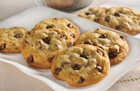

Chocolate Chip Cookies

The best DARN Chocolate Chip Cookies recipe!!
This is the recipe that started it all!
Based off of the Nestle Toll House recipe, a true classic.
I have been making this recipe in my house for years.
There have been many attempts at others but nothing comes even close to this one.
This recipe takes home the milk on every occasion.
I hope you all enjoy this as much as me and my family have for years to come.
Ingredients
- 2 1/4 cups all-purpose flour
- 1 teaspoon baking soda
- 1 1/2 teaspoon salt
- 1 cup (2 sticks) butter, softened
- 3/4 cup granulated sugar
- 3/4 cup packed brown sugar
- 1 teaspoon vanilla extract
- 2 large eggs
- 2 cups (12-ounce package) Semi-Sweet Chocolate Morsels
- 1 cup chopped nuts (Optional. If omitting, add 1 to 2 Tbsp. of all-purpose flour.)
Lets get baking!!
- Preheat oven to 375° F.
- Combine flour, baking soda and salt in small bowl.
- Beat butter, granulated sugar, brown sugar and vanilla extract in large mixer bowl until creamy.
- Add eggs, one at a time, beating well after each addition.
- Gradually beat in flour mixture.
- Stir in morsels and nuts.
- Drop by rounded tablespoon onto ungreased baking sheets.
- Bake for 9 to 11 minutes or until golden brown.
- Cool on baking sheets for 2 minutes; remove to wire racks to cool completely.